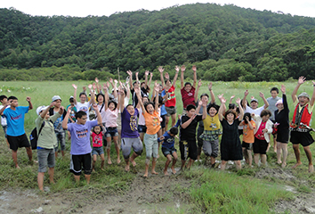

促進會服務
以關懷糖尿病病友及家屬為基礎，促進病友對疾病的認識， 維持身心健康與生活品質，並與醫護人員建立良好互動，提高社會大眾對糖尿病之正確認識，協助病友獲得更好的醫療照顧與社會資源及生、心理的調適，進而為糖尿病病友爭取更多的福利及應有權益。
一、聯繫病友感情，增加病友對疾病的瞭解，提昇病友健康層次及生活品質。
二、結合病友及家屬與醫療人員之互相教育與溝通，以促進病友彼此間經驗與心得的分享，加強病友的適應力與自我照顧能力。
三、增進病友及社會大眾重視對糖尿病之正確認識與預防。
四、整合相關醫療資源，提昇醫療效果及整體保健功能。
五、爭取社會福利資源，辦理糖尿病相關課程、計畫及活動。
六、協助病友及家屬在生活、教育、經濟等等之相關事務活動。